The urbioconnect R package implements Kirk et al.’s (2023) method for estimating habitat connectivity in urban environments.
You can measure the connectivity with
habitat_connectivity():
lizard_connectivity <- habitat_connectivity(
habitat = example_habitat(),
barrier = example_barrier(),
interpatch_distance = 100,
species = "Blue-tongued Lizard"
)
#> i Creating barrier mask
#> v Creating barrier mask [2.3s]
#>
#> i Removing habitat underneath barrier
#> v Removing habitat underneath barrier [98ms]
#>
#> i Buffering habitat for an interpatch distance of 100m
#> v Buffering habitat for an interpatch distance of 100m [6.5s]
#>
#> i Fragmenting habitat layer along barrier intersection
#> v Fragmenting habitat layer along barrier intersection [30ms]
#>
#> i Assigning patches ID to fragments
#> v Assigning patches ID to fragments [526ms]
#>
#> i Summarising area in each patch
#> v Summarising area in each patch [170ms]
#>
lizard_connectivity
#> # A tibble: 1 x 9
#> species interpatch_distance n_patches effective_mesh_ha prob_connectedness
#> <chr> <dbl> <int> <dbl> <dbl>
#> 1 Blue-tongu~ 100 59 4.49 0.171
#> # i 4 more variables: patch_area_mean <dbl>, patch_area_total_ha <dbl>,
#> # data_resolution <chr>, patch_size <list>This tells us what the baseline level of connectivity is.
A key addition Kirk et al. brought is in comparing a baseline level of connectivity to a “scenario”. This is where, say, you compare the baseline connectivity, to where the habitat is reduced, or grown, or more barriers are added, or removed. This is very useful when designing new urban spaces, as it allows planners to assess the ecological impact a new plan can have on an urban area.
The goal of this vignette is to take a scenario that changes the habitat, the barriers, or both, and then compare its connectivity to the baseline.
The data
We use the Blue Tongue Lizard example data:
layers <- prepare_rasters(
example_habitat(),
example_barrier(),
data_resolution = 10
)
habitat <- layers$habitat_raster
barrier <- layers$barrier_rasterprepare_rasters() puts both layers on a grid of 10 m
cells, which keeps every comparison here quick - since by default they
are 2 m.
The scenario is a new road. example_barrier_scenario()
is the lizard barrier layer with a road cut through it from north to
south.
library(terra)
#> terra 1.9.50
example_barrier() |> plot()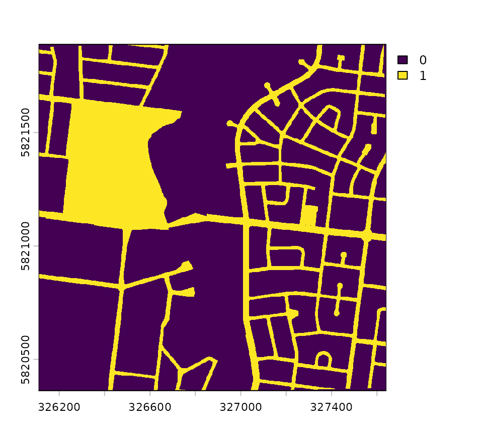
example_barrier_scenario() |> plot()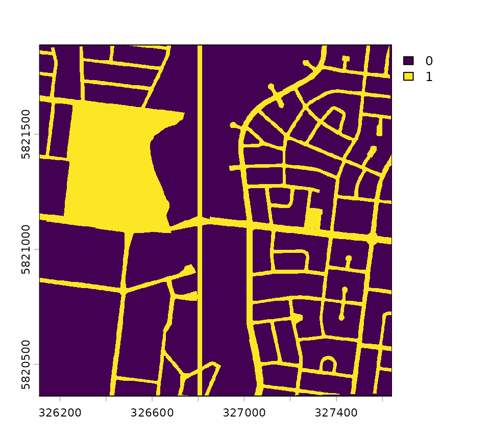
It comes on the original 2 m grid, so onto_grid() puts
it on the baseline’s grid.
A misaligned grid shows what happens if you don’t.
new_road <- onto_grid(
layer = example_barrier_scenario(),
grid = barrier,
background = 0
)In these maps, habitat is dark green and barriers are white:
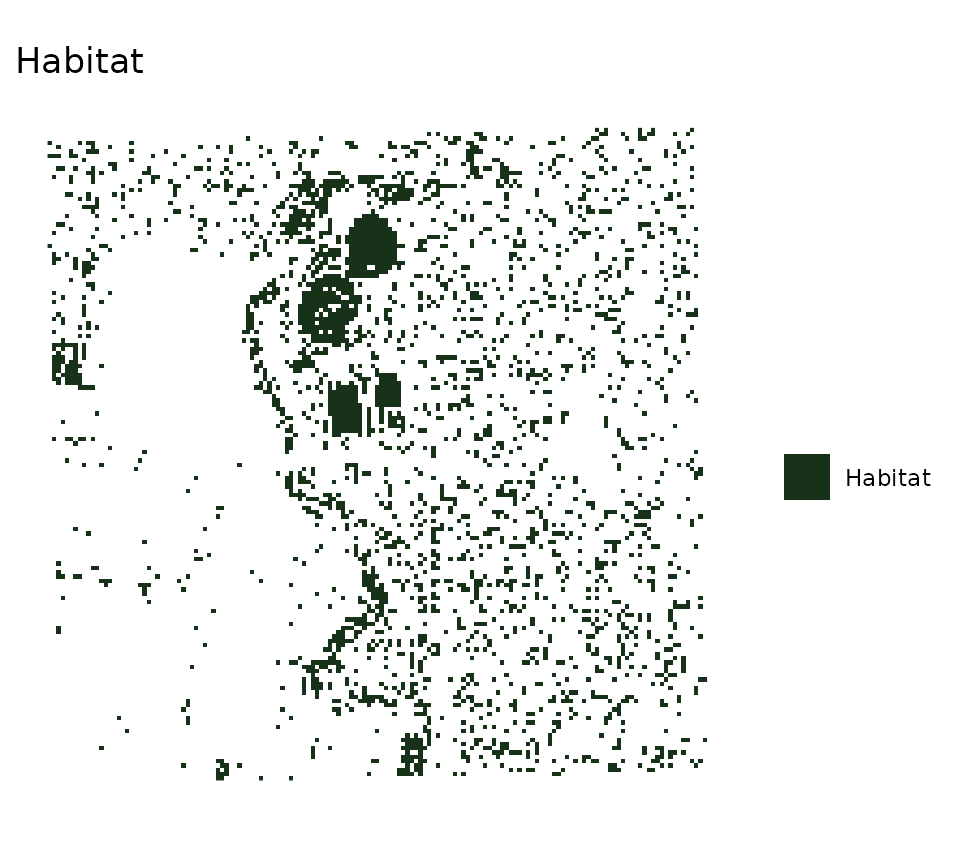
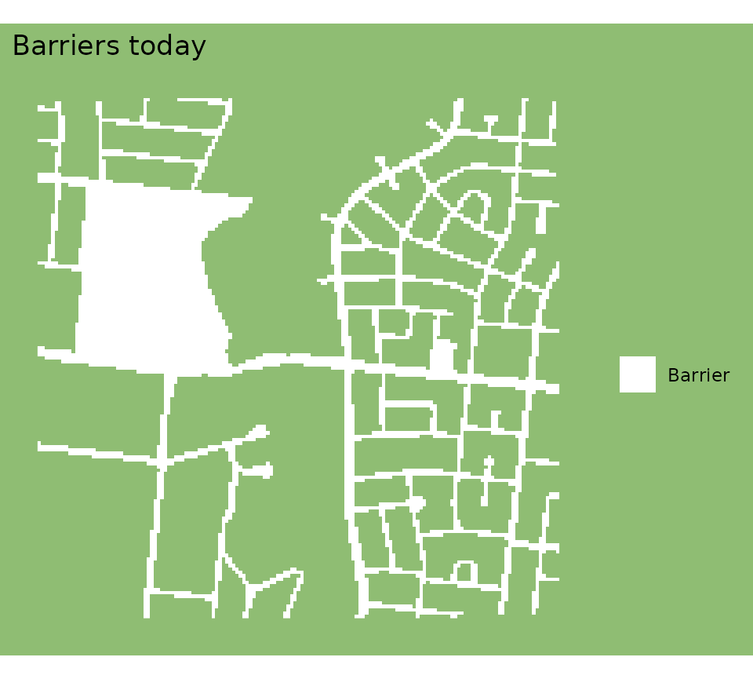
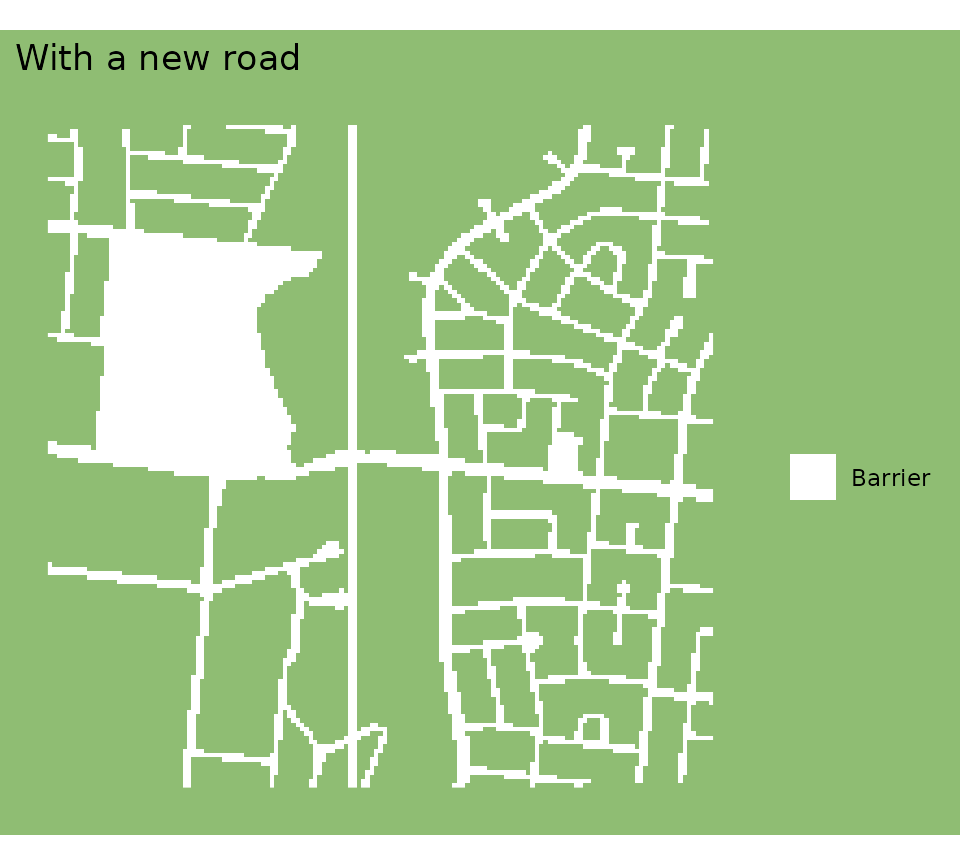
habitat connectivity comparison and scenarios
Two functions start from layers:
-
habitat_connectivity_comparison()compares one scenario with the baseline. -
habitat_connectivity_scenarios()compares several scenarios with the baseline.
Both run habitat_connectivity() on the baseline and on
each scenario, then compare the results.
If you’ve already run habitat_connectivity() on each
landscape yourself, you can use compare_connectivity() and
compare_scenarios(), to do just the comparing.
You give the baseline as habitat_baseline and
barrier_baseline, and the scenario as the layers the plan
changes.
The function takes the rest from the baseline:
| You provide | Scenario’s habitat | Scenario’s barrier |
|---|---|---|
habitat_scenario |
habitat_scenario |
barrier_baseline |
barrier_scenario |
habitat_baseline |
barrier_scenario |
| both | habitat_scenario |
barrier_scenario |
Each layer you give is the whole layer after the change, not just the part that changes. What gives a misleading answer shows what happens otherwise.
Worked scenarios
A new road
A new road changes the barriers, so it goes in
barrier_scenario, and we provide
barrier_scenario = new_road. The habitat stays as-is:
road <- habitat_connectivity_comparison(
habitat_baseline = habitat,
barrier_baseline = barrier,
species = "Blue Tongue Lizard",
interpatch_distance = 100,
barrier_scenario = new_road,
scenario_name = "A new road",
verbose = FALSE
)
road
#> # A tibble: 4 x 10
#> scenario_name measure species interpatch_distance n_patches effective_mesh_ha
#> <chr> <chr> <chr> <dbl> <dbl> <dbl>
#> 1 A new road baseline Blue T~ 100 65 4.52
#> 2 A new road scenario Blue T~ 100 68 2.10
#> 3 A new road change Blue T~ 100 3 -2.41
#> 4 A new road pct_cha~ Blue T~ 100 4.62 -53.4
#> # i 4 more variables: prob_connectedness <dbl>, patch_area_mean <dbl>,
#> # patch_area_total_ha <dbl>, data_resolution <chr>There are four rows, one for baseline, scenario, change, and then percent change.
baseline and scenario are the two
landscapes, change is the scenario minus the baseline, and
pct_change is that change as a percentage of the
baseline.
Printed like this, the comparison hides the columns that don’t fit on
the screen. summary() shows every metric, one per row, with
the baseline, the scenario, the change and the per cent change side by
side:
summary(road)
#> Scenario: A new road
#> Interpatch distance: 100 m
#> Metric Baseline Scenario Change % change
#> Patches 65 68 3 4.62
#> Mesh (ha) 4.52 2.1 -2.41 -53.4
#> P(connected) 0.167 0.0778 -0.0893 -53.4
#> Mean area (m2) 4160 3840 -320 -7.7
#> Total area (ha) 27 26.1 -0.929 -3.44The road splits the habitat into 3 more patches, and the effective mesh falls by 53 per cent.
Habitat cleared
Clearing habitat changes the habitat layer, so it goes in
habitat_scenario. The barriers stay as they are today.
Here, a development clears all the habitat in the west of the map:
cleared <- habitat
cleared[, 1:60] <- NA
cleared_comparison <- habitat_connectivity_comparison(
habitat_baseline = habitat,
barrier_baseline = barrier,
species = "Blue Tongue Lizard",
interpatch_distance = 100,
habitat_scenario = cleared,
scenario_name = "cleared_habitat",
verbose = FALSE
)
summary(cleared_comparison)
#> Scenario: cleared_habitat
#> Interpatch distance: 100 m
#> Metric Baseline Scenario Change % change
#> Patches 65 44 -21 -32.3
#> Mesh (ha) 4.52 3.51 -1.01 -22.4
#> P(connected) 0.167 0.13 -0.0374 -22.4
#> Mean area (m2) 4160 5110 955 23
#> Total area (ha) 27 22.5 -4.53 -16.8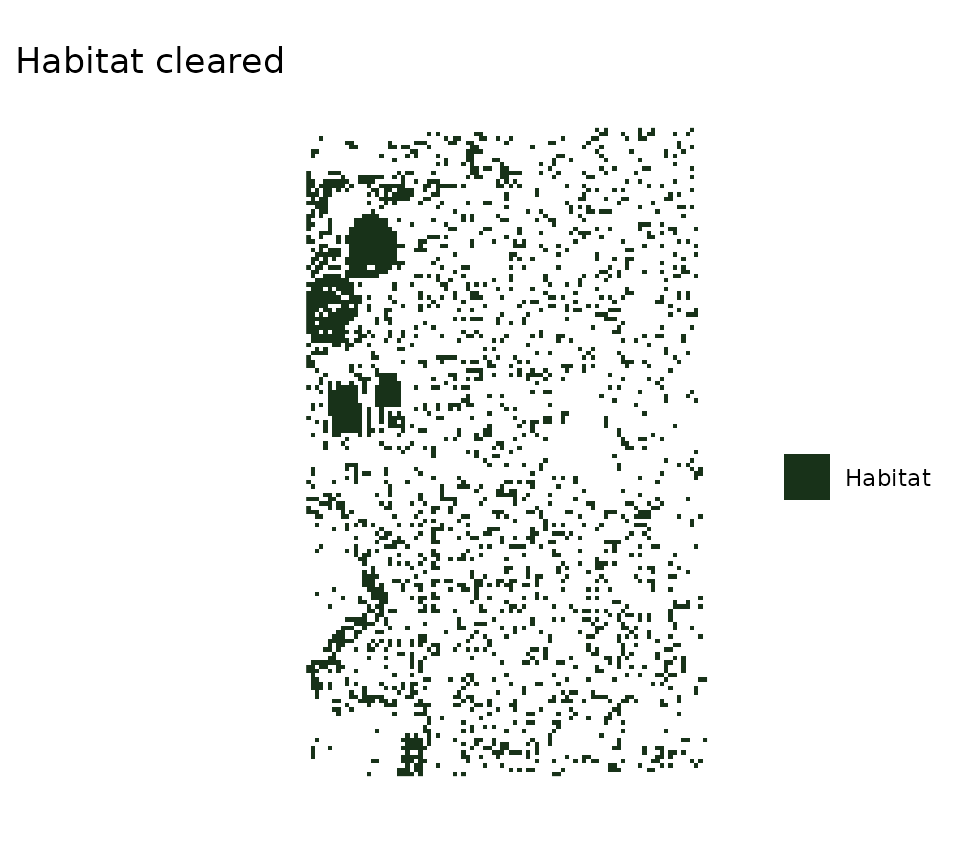
Losing habitat costs 22 per cent of the effective mesh.
But the patch count falls by 32 per cent and the mean patch area rises by 23 per cent, and on their own both would read as good news.
The clearing took many small patches and left the bigger ones.
So read the metrics together.
Kirk et al. make the same point: a lot of habitat can still have a small effective mesh, if it’s broken into pieces.
Habitat added
Adding habitat works the same way.
Here, every cell in a large block in the north becomes habitat. Habitat under a barrier is dropped by the analysis, so the block needn’t avoid the roads.
planted <- habitat
planted[1:80, 50:100] <- 1
planted_comparison <- habitat_connectivity_comparison(
habitat_baseline = habitat,
barrier_baseline = barrier,
species = "Blue Tongue Lizard",
interpatch_distance = 100,
habitat_scenario = planted,
scenario_name = "planted",
verbose = FALSE
)
summary(planted_comparison)
#> Scenario: planted
#> Interpatch distance: 100 m
#> Metric Baseline Scenario Change % change
#> Patches 65 66 1 1.54
#> Mesh (ha) 4.52 34.1 29.6 656
#> P(connected) 0.167 1.26 1.1 656
#> Mean area (m2) 4160 7690 3530 85
#> Total area (ha) 27 50.8 23.7 87.8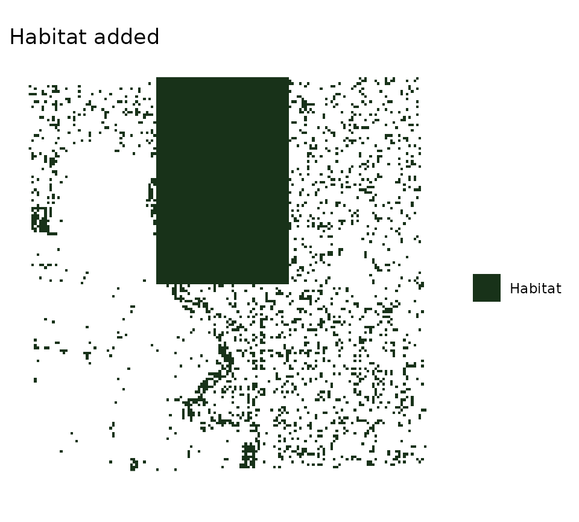
The effective mesh rises by 656 per cent. But the probability of connectedness for this scenario is 1.26, which exceeds one, and stretches the understanding of probability here - something to be explored.
Following Kirk et al., both rows divide the effective mesh by the baseline’s habitat area, 27 ha. The scenario has 50.8 ha of habitat, so once enough of it is connected, the value passes 1.
That’s also why the effective mesh and the probability of connectedness always change by the same percentage.
How to report this is an open question, in #183.
Until that’s settled, read the per cent change for a scenario that adds habitat.
A new road and new habitat together
Some plans change both layers.
For example, if a new road comes with new habitat plants.
If you provide both layers, the comparison shows their combined effect:
road_and_planted <- habitat_connectivity_comparison(
habitat_baseline = habitat,
barrier_baseline = barrier,
species = "Blue Tongue Lizard",
interpatch_distance = 100,
habitat_scenario = planted,
barrier_scenario = new_road,
scenario_name = "planted new road",
verbose = FALSE
)
summary(road_and_planted)
#> Scenario: planted new road
#> Interpatch distance: 100 m
#> Metric Baseline Scenario Change % change
#> Patches 65 69 4 6.15
#> Mesh (ha) 4.52 15.9 11.4 252
#> P(connected) 0.167 0.589 0.422 252
#> Mean area (m2) 4160 7110 2950 71
#> Total area (ha) 27 49.1 22 81.5Together, the road and the planting add 11.4 ha of effective mesh.
In order to see how much they each individually add, or change, you
can compare these with
habitat_connectivity_scenarios().
Several scenarios at once
habitat_connectivity_scenarios() compares several
scenarios with one baseline. Each layer in
habitat_scenarios or barrier_scenarios is its
own scenario that changes that one layer and the lists are never
combined.
So this now provides three scenarios:
scenarios <- habitat_connectivity_scenarios(
habitat_baseline = habitat,
barrier_baseline = barrier,
species = "Blue Tongue Lizard",
interpatch_distance = 100,
habitat_scenarios = list(
"Habitat cleared" = cleared,
"Habitat added" = planted
),
barrier_scenarios = list(
"A new road" = new_road
),
verbose = FALSE
)
scenarios
#> # A tibble: 12 x 10
#> scenario_name measure species interpatch_distance n_patches effective_mesh_ha
#> <chr> <chr> <chr> <dbl> <dbl> <dbl>
#> 1 Habitat clea~ baseli~ Blue T~ 100 65 4.52
#> 2 Habitat clea~ scenar~ Blue T~ 100 44 3.51
#> 3 Habitat clea~ change Blue T~ 100 -21 -1.01
#> 4 Habitat clea~ pct_ch~ Blue T~ 100 -32.3 -22.4
#> 5 Habitat added baseli~ Blue T~ 100 65 4.52
#> 6 Habitat added scenar~ Blue T~ 100 66 34.1
#> 7 Habitat added change Blue T~ 100 1 29.6
#> 8 Habitat added pct_ch~ Blue T~ 100 1.54 656.
#> 9 A new road baseli~ Blue T~ 100 65 4.52
#> 10 A new road scenar~ Blue T~ 100 68 2.10
#> 11 A new road change Blue T~ 100 3 -2.41
#> 12 A new road pct_ch~ Blue T~ 100 4.62 -53.4
#> # i 4 more variables: prob_connectedness <dbl>, patch_area_mean <dbl>,
#> # patch_area_total_ha <dbl>, data_resolution <chr>
summary(scenarios)
#> Scenario: Habitat cleared
#> Interpatch distance: 100 m
#> Metric Baseline Scenario Change % change
#> Patches 65 44 -21 -32.3
#> Mesh (ha) 4.52 3.51 -1.01 -22.4
#> P(connected) 0.167 0.13 -0.0374 -22.4
#> Mean area (m2) 4160 5110 955 23
#> Total area (ha) 27 22.5 -4.53 -16.8
#>
#> Scenario: Habitat added
#> Interpatch distance: 100 m
#> Metric Baseline Scenario Change % change
#> Patches 65 66 1 1.54
#> Mesh (ha) 4.52 34.1 29.6 656
#> P(connected) 0.167 1.26 1.1 656
#> Mean area (m2) 4160 7690 3530 85
#> Total area (ha) 27 50.8 23.7 87.8
#>
#> Scenario: A new road
#> Interpatch distance: 100 m
#> Metric Baseline Scenario Change % change
#> Patches 65 68 3 4.62
#> Mesh (ha) 4.52 2.1 -2.41 -53.4
#> P(connected) 0.167 0.0778 -0.0893 -53.4
#> Mean area (m2) 4160 3840 -320 -7.7
#> Total area (ha) 27 26.1 -0.929 -3.44The list names become the scenario_name column. The
baseline runs once per distance, and every scenario shares it.
plot_connectivity() draws a comparison, with the
baseline beside each scenario:
plot_connectivity(scenarios)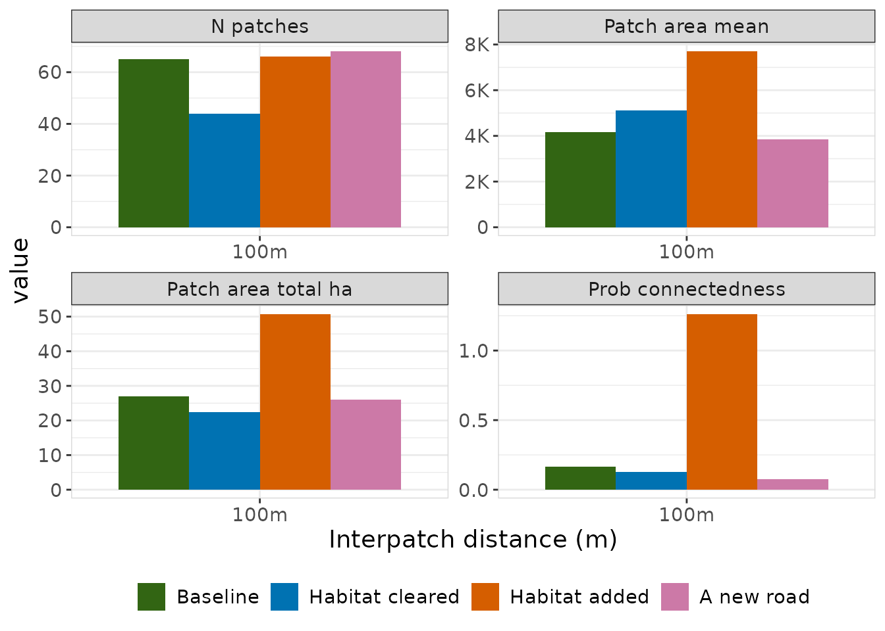
For a plan that changes both layers, like the road with the planting,
use habitat_connectivity_comparison().
A misaligned grid
The layers you compare must share a grid: the same cell size, extent and coordinate reference system.
Rather than quietly resample a scenario layer, both functions give an
error, and leave you to put it on the baseline’s grid with
onto_grid().
Here’s a landscape small enough to see every cell, with two blocks of habitat and no barriers today:
# a matrix of cells, laid out over a 40 m square
square <- function(cells) {
terra::rast(
cells,
extent = terra::ext(
0,
40,
0,
40
),
crs = "EPSG:28355"
)
}
small_habitat <- square(
rbind(
c(1, 1, NA, NA),
c(1, 1, NA, NA),
c(NA, NA, 1, 1),
c(NA, NA, 1, 1)
)
)
small_barrier <- square(
matrix(
0,
nrow = 4,
ncol = 4
)
)The scenario is a new road, drawn on a finer grid:
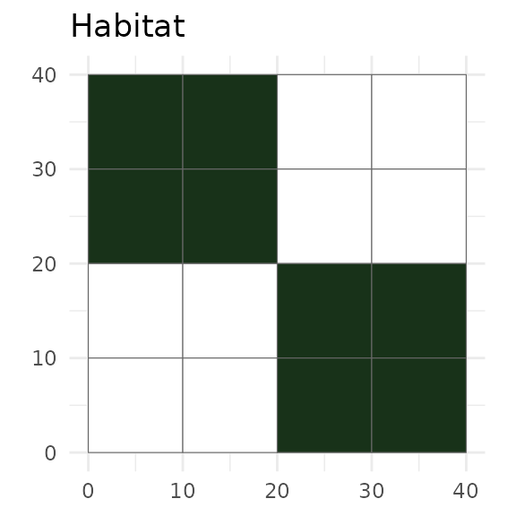
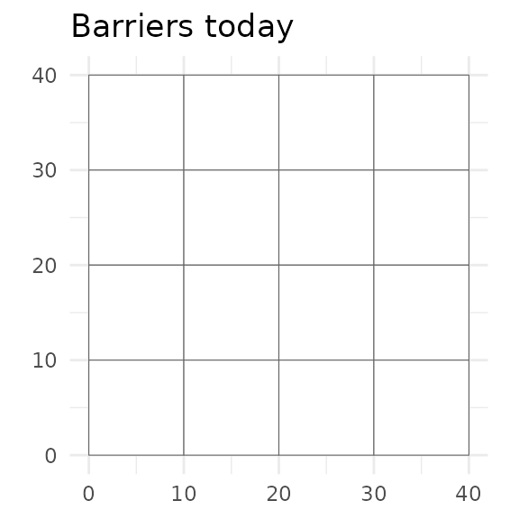
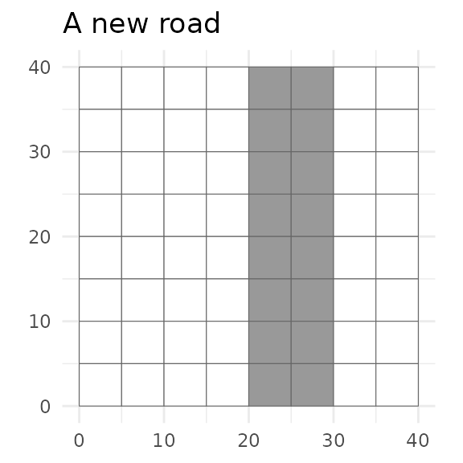
The baseline has 10 m cells, and the road has 5 m cells. Comparing them gives an error:
habitat_connectivity_comparison(
habitat_baseline = small_habitat,
barrier_baseline = small_barrier,
species = "Blue Tongue Lizard",
interpatch_distance = 20,
barrier_scenario = road_fine,
verbose = FALSE
)
#> Error in `habitat_connectivity_comparison()`:
#> ! `barrier_scenario` and `barrier_baseline` are not the same landscape.
#> x Their resolution differs.
#> i Put `barrier_scenario` on the grid of `barrier_baseline` first, with
#> `onto_grid()`.onto_grid() puts the road on the baseline’s grid.
It takes a raster, as here, or a vector layer such as a shapefile.
For a vector layer, background is the value of a cell
the layer doesn’t cover: 0 for a barrier, NA
for habitat.
road_aligned <- onto_grid(
road_fine,
grid = small_barrier,
background = 0
)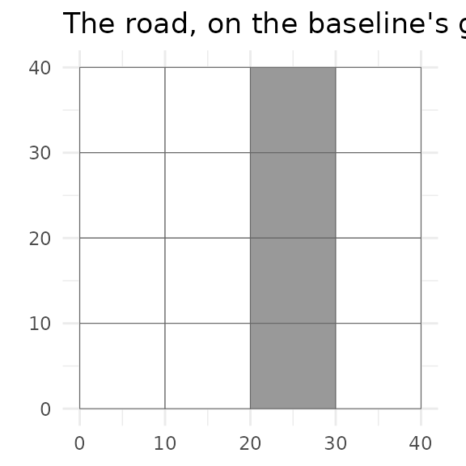
Now the comparison runs:
small_comparison <- habitat_connectivity_comparison(
habitat_baseline = small_habitat,
barrier_baseline = small_barrier,
species = "Blue Tongue Lizard",
interpatch_distance = 20,
barrier_scenario = road_aligned,
verbose = FALSE
)
summary(small_comparison)
#> Interpatch distance: 20 m
#> Metric Baseline Scenario Change % change
#> Patches 1 2 1 100
#> Mesh (ha) 0.0796 0.0249 -0.0547 -68.7
#> P(connected) 1 0.313 -0.687 -68.7
#> Mean area (m2) 796 298 -497 -62.5
#> Total area (ha) 0.0796 0.0597 -0.0199 -25The road splits 1 patch into 2.
What gives a misleading answer
Each scenario layer must be the whole layer after the change. Give just the new road, rather than the barrier layer with the road in it, and every other road is gone from the scenario:
road_only <- new_road - barrier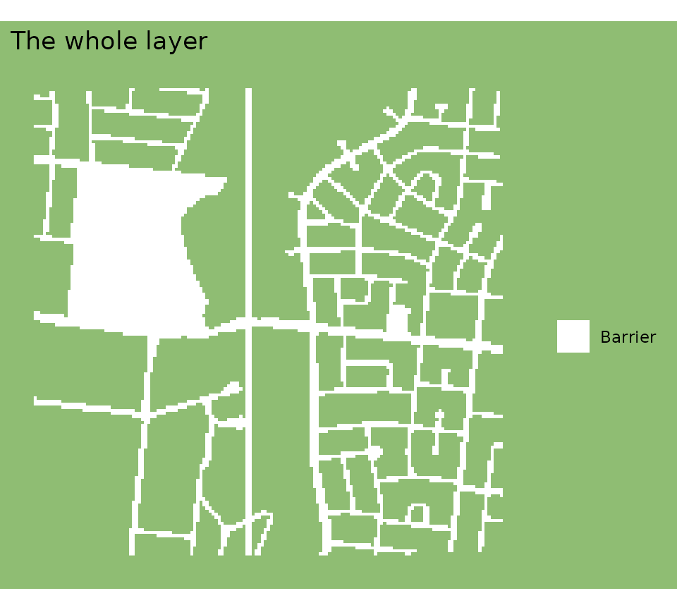
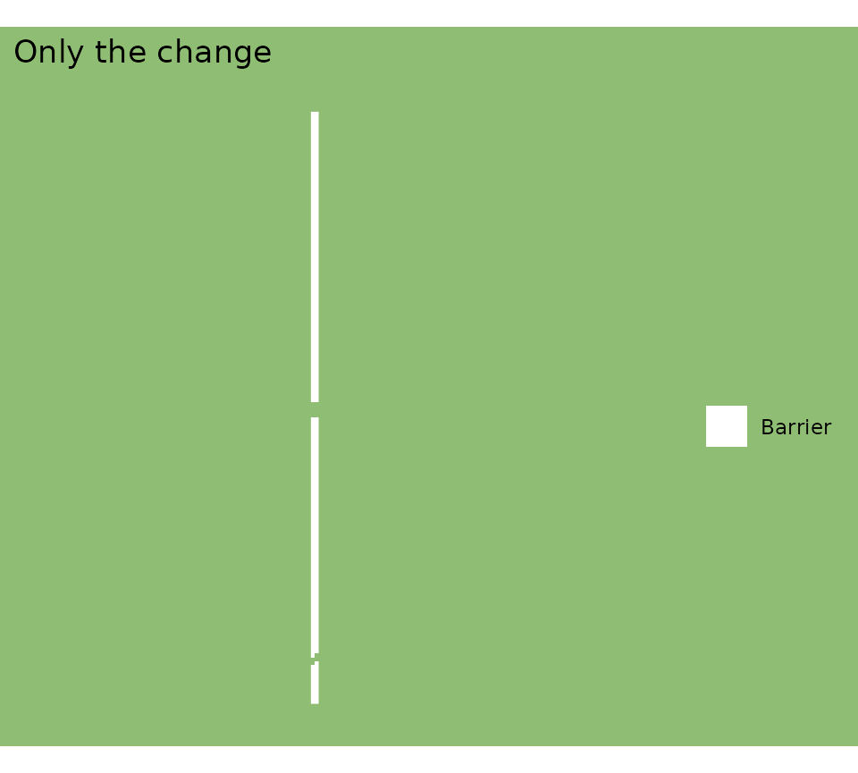
Nothing gives an error, because the road on its own is a valid barrier layer:
road_only_comparison <- habitat_connectivity_comparison(
habitat_baseline = habitat,
barrier_baseline = barrier,
species = "Blue Tongue Lizard",
interpatch_distance = 100,
barrier_scenario = road_only,
verbose = FALSE
)
summary(road_only_comparison)
#> Interpatch distance: 100 m
#> Metric Baseline Scenario Change % change
#> Patches 65 3 -62 -95.4
#> Mesh (ha) 4.52 31.6 27.1 601
#> P(connected) 0.167 1.17 1 601
#> Mean area (m2) 4160 99200 95000 2280
#> Total area (ha) 27 29.8 2.72 10That comparison says the effective mesh rises by 601 per cent, when the road really cuts it by 53 per cent.